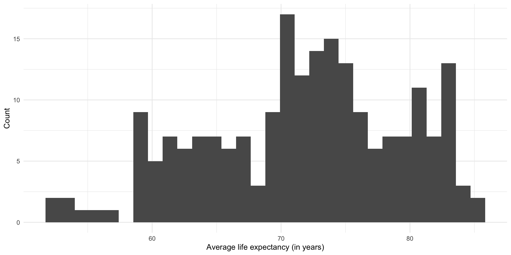
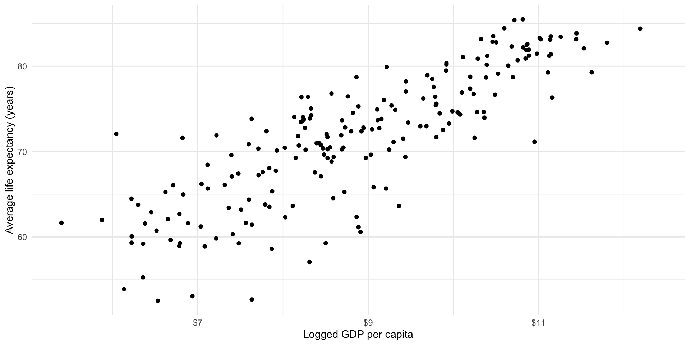
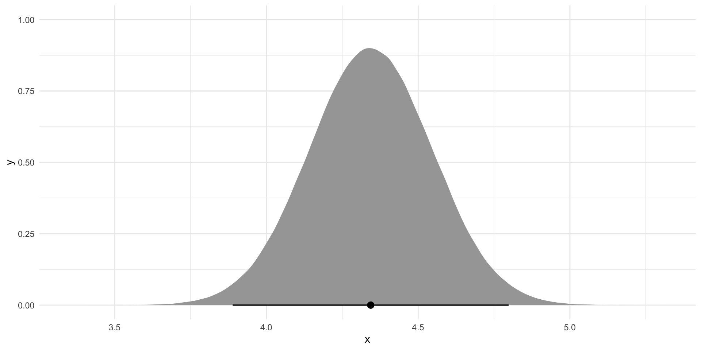

library(tidyverse)
library(poliscidata)
library(janitor)
library(scales)
library(wbstats)
library(broom)
library(ggdist)Linear Regression: A Refresher
Packages
Introduction
You have a brilliant idea describing the relationship between an outcome of interest and a variable that you think is driving interesting changes to that outcome. You have a very clever theory describing the relationship between these two phenomena. Now you want to provide empirical support for that theory.
This quick refresher will outline the steps required to fit a linear regression model against two continuous variables: a dependent variable (our outcome of interest) and an independent variable (the thing you think is driving changes to that outcome of interest).
Note
For a more in-depth set of notes on each of these steps, please refer to the GVPT622: Quantitative Methods for Political Science notes.
Do richer countries enjoy better health outcomes?
Let’s return to a familiar question: what is the relationship between a country’s health and its wealth?
Here, our outcome of interest is the average health of countries’ citizens. We want to determine what factors are important determinants of a country’s citizens’ health. We theorize that the level of wealth each country’s citizens hold is an important determinant of their overall health.
Simply put, our goal is to produce the best model we can of how our outcome of interest occurs. You might hear people refer to this process - how an outcome of interest occurs - as the data generation process. This is just a rather sterile way of asking how our outcome of interest comes to be. For example, what factors drove the level of health of countries last year? How did they shape those health outcomes?
We can use a good model of our outcome of interest to achieve two worthwhile goals. First, this model provides us with explanatory traction. This, generally speaking, is your raison d’être as an academic. Your research goals should be to identify and explain the mechanisms driving changes to some important outcome of interest. To do that, you need to identify what factors are the important determinants of that outcome of interest. What gets people out to vote? What drives countries to war with one another? Why do some countries experience democratic backsliding? You need to find and then explain what factors are the most important drivers of these outcomes. You can use these statistical tools to do just that.
Second, this model provides us with predictive power. If we know the factors that are driving (or at least strongly associated with) changes to our outcome of interest and we know how they are shaping that outcome, we can predict how changes to those factors will effect our outcome of interest. For example, if you know that large spikes in the price of food staples are strongly associated with the onset of civil unrest, you can alert policymakers to the increased risk of that unrest if such spikes occur. You can also use your model to inform policymakers of the expected effects of various policies or interventions that they may be considering.
Having completed GVPT622, you now have the knowledge and skills to test empirically the relationship between two variables: a dependent and an independent variable. Let’s refresh those.
Step 1: Collect your data
Do richer countries enjoy better health outcomes? To answer this question, we need data on the health and wealth of each country’s citizens. We will use historical data to learn about the relationship between a country’s health and wealth. We will then extrapolate from that historical relationship to a generalized understanding of the relationship.
To do this, we need an observable and measurable factor that appropriately represents each of these concepts. I propose to follow the approach applied by the Gapminder project. We will use the average life expectancy of each country’s citizens as a measure of the health of its citizens. Countries with higher average life expectancy are assumed to have higher levels of health. We will use each country’s gross domestic product (GDP) per capita as our proxy measure of its citizens’ average wealth. Countries with higher GDP per capita are assumed to have wealthier citizens.
We might expect that as the wealth of country’s citizens increases, so too does their overall health. Our measurable hypothesis is; therefore, as follows:
The higher a country’s GDP per capita, the longer its average life expectancy will be.
Tip
All hypotheses must be testable. In other words, we must be able to use data to prove whether or not our hypothesis is true or false.
The World Bank provides reliable data on both of these variables. We can use the wbstats R package to pull these data from the World Bank API all from within our R script.
gapminder_df <- wb_data(
indicator = c("SP.DYN.LE00.IN", "NY.GDP.PCAP.CD"),
start_date = 2021,
end_date = 2021
) |>
rename(
life_exp = SP.DYN.LE00.IN,
gdp_per_cap = NY.GDP.PCAP.CD
) |>
mutate(log_gdp_per_cap = log(gdp_per_cap))
gapminder_df# A tibble: 217 × 7
iso2c iso3c country date gdp_per_cap life_exp log_gdp_per_cap
<chr> <chr> <chr> <dbl> <dbl> <dbl> <dbl>
1 AW ABW Aruba 2021 29128. 74.6 10.3
2 AF AFG Afghanistan 2021 356. 62.0 5.87
3 AO AGO Angola 2021 1927. 61.6 7.56
4 AL ALB Albania 2021 6377. 76.5 8.76
5 AD AND Andorra 2021 42072. NA 10.6
6 AE ARE United Arab Emirates 2021 44332. 78.7 10.7
7 AR ARG Argentina 2021 10651. 75.4 9.27
8 AM ARM Armenia 2021 4973. 72.0 8.51
9 AS ASM American Samoa 2021 16654. NA 9.72
10 AG ATG Antigua and Barbuda 2021 17179. 78.5 9.75
# ℹ 207 more rowsStep 2: Know your data
Once you have data for your variables of interest you should take a good look at them. We now have access to data on 217 countries’ average life expectancy and GDP per capita.
Individual variables
First, take a look at each variable individually. Some useful questions with which to start include:
What kind of data are they (continuous or categorical)?
How are they distributed (normally or are they skewed)?
Are there any unusual data points? If so, why are they unusual?
Are any observations missing? Is this missingness random or systematic?
One of the easiest ways to answer these and other important questions is by visualizing your variables. We can use the many great plot functions in ggplot to do this.
Let’s start with our outcome of interest: a country’s average life expectancy.
ggplot(gapminder_df, aes(x = life_exp)) +
geom_histogram() +
theme_minimal() +
labs(
x = "Average life expectancy (in years)",
y = "Count"
)
This is what we are trying to model.
We suspect that the average wealth of a country’s citizens is associated with their overall level of health. Let’s look at the distribution of countries’ GDP per capita:
ggplot(gapminder_df, aes(x = gdp_per_cap)) +
geom_histogram() +
theme_minimal() +
labs(
x = "GDP per capita (in current USD)",
y = "Count"
) +
scale_x_continuous(labels = label_dollar())The relationship between these two variables
Now you can take a look at the relationship between your two variables of interest.
Some good questions with which to start:
How do the two variables move with each other? As one goes up, does the other also go up, go down, or stay roughly constant?
What is the shape of this relationship? Is it constant (linear)?
Are there any noticable clusters or groups of observations?
Are there any unusual observations? Ones sitting out on their own?
Let’s visualize the relationship between each country’s average life expectancy and its GDP per capita:
ggplot(gapminder_df, aes(x = gdp_per_cap, y = life_exp)) +
geom_point() +
theme_minimal() +
labs(x = "GDP per capita (USD current)",
y = "Average life expectancy (years)") +
scale_x_continuous(labels = label_dollar())This relationship is positive: as a country’s wealth increases, so too does its health. However, this relationship is not linear. An increase of $1,000 GDP per capita tends to be associated with a large increase in the country’s average life expectancy when the country has relatively low GDP per capita compared to the change in a richer country’s average life expectancy that tends to be associated with that same $1,000 increase in GDP per capita.
We can model non-linear relationships; however, these models can be difficult to interpret. Happily the relationship between a country’s average life expectancy and its logged GDP per capita is linear:
ggplot(gapminder_df, aes(x = log_gdp_per_cap, y = life_exp)) +
geom_point() +
theme_minimal() +
labs(x = "Logged GDP per capita",
y = "Average life expectancy (years)") +
scale_x_continuous(labels = label_dollar())
This transformation means that we can now appropriately fit a linear model to these two variables: logged GDP per capita and average life expectancy.
Step 3: Fit your linear model
We can now fit a linear regression model to our data to better capture and generalize this relationship.
An Ordinary Least Squares (OLS) regression finds the straight line that minimizes the distance between itself and all of the data points.
We can visualize that relationship using geom_smooth() from ggplot:
ggplot(gapminder_df, aes(x = log_gdp_per_cap, y = life_exp)) +
geom_point() +
geom_smooth(method = "lm", se = F) +
theme_minimal() +
labs(x = "Logged GDP per capita",
y = "Average life expectancy (years)") +
scale_x_continuous(labels = label_dollar())
We can fit that model using lm():
m <- lm(life_exp ~ log_gdp_per_cap, data = gapminder_df)
m
Call:
lm(formula = life_exp ~ log_gdp_per_cap, data = gapminder_df)
Coefficients:
(Intercept) log_gdp_per_cap
33.217 4.343 This gives us an estimated linear relationship between a country’s health and wealth. Formally:
\[ Life\ expectancy = \beta_0 + \beta_{1} Logged\ GDP\ per\ capita + \epsilon \]
Our model estimates the following relationship:
\[ Life\ expectancy = 33.427 + 4.316 Logged\ GDP\ per\ capita + \epsilon \]
We can use this model to do all kinds of amazing things, including (hopefully) providing empirical support for our theories and making predictions about some outcome of interest.
Step 4: Interpret your model
What does this model tell us about the estimated relationship between a country’s life expectancy and its logged GDP per capita?
First, let’s look at the regression coefficient for a country’s logged GDP per capita. We found that every one unit increase in a country’s logged GDP per capita is associated with a 4.343 year increase in its citizens’ average life expectancy, on average.
Second, let’s look at that intercept coefficient. A country with a logged GDP per capita of zero is expected to have an average life expectancy of 33.217 years, on average. This is not a very useful piece of information because there are no countries with zero (logged) GDP per capita. Therefore, this intercept coefficient is more usefully thought of as a statistical artifact that grounds our model.
Warning
Linear regression models cannot detect causal relationships. You cannot use this model to determine whether changes to your dependent variable are caused by changes to your independent variable. Here, we cannot use this model as evidence of changes to a country’s GDP per capita causing changes in its average life expectancy. Therefore, you need to be careful when interpreting linear regression models. Use words like “associated with” instead of “causes”.
Step 5: Evaluate your model
How well does our model fit our data? This is a complicated question without a single answer. As we step through this you should think critically about what questions you should ask of your data and your model that would help convince you that you have found the underlying relationship.
The first thing that is worth noting is that in the previous step we moved away from focusing on modelling our outcome of interest: each country’s average life expectancy. Instead, we wanted to understand the relationship between that outcome and our independent variable (each country’s GDP per capita). Let’s step back for a second and look again at modelling the outcome of interest.
To do this, we can see what our model predicts each country’s average life expectancy to be given its GDP per capita. To work this out, we simply need to plug each country’s GDP per capita into our model:
\[ Life\ expectancy = 33.427 + 4.316 Logged\ GDP\ per\ capita + \epsilon \]
Happily, broom::augment() does this for us:
m_pred <- augment(m)
m_pred# A tibble: 201 × 9
.rownames life_exp log_gdp_per_cap .fitted .resid .hat .sigma .cooksd
<chr> <dbl> <dbl> <dbl> <dbl> <dbl> <dbl> <dbl>
1 1 74.6 10.3 77.9 -3.24 0.00956 4.24 0.00285
2 2 62.0 5.87 58.7 3.25 0.0255 4.24 0.00793
3 3 61.6 7.56 66.1 -4.43 0.00887 4.23 0.00494
4 4 76.5 8.76 71.3 5.20 0.00500 4.23 0.00380
5 6 78.7 10.7 79.7 -0.978 0.0127 4.24 0.000348
6 7 75.4 9.27 73.5 1.90 0.00536 4.24 0.000542
7 8 72.0 8.51 70.2 1.86 0.00526 4.24 0.000511
8 10 78.5 9.75 75.6 2.93 0.00677 4.24 0.00164
9 11 83.3 11.0 81.1 2.25 0.0156 4.24 0.00226
10 12 81.2 10.9 80.5 0.733 0.0144 4.24 0.000221
# ℹ 191 more rows
# ℹ 1 more variable: .std.resid <dbl>augment() takes each of our 217 countries’ logged GDP per capita (log_gdp_per_cap), plugs it into our model (written above), and tells us the corresponding predicted average life expectancy (.fitted).
Note
Note that some data are missing for some countries. That is why we have less than 217 predicted values.
Let’s take a look at both our predicted average life expectancy and the actual average life expectancy of each country in our dataset:
ggplot(m_pred) +
geom_histogram(aes(x = life_exp)) +
geom_histogram(aes(x = .fitted), fill = "blue", alpha = 0.5) +
theme_minimal() +
labs(x = "Average life expectancy (in years)",
y = "Count")The distribution of the predicted average life expectancy is provided in blue. The actual average life expectancy of each county is provided in gray.
A density curve might also help here:
ggplot(m_pred) +
geom_density(aes(x = life_exp)) +
geom_density(aes(x = .fitted), colour = "blue") +
theme_minimal() +
labs(x = "Average life expectancy (in years)",
y = "Count")We’re looking pretty good! Ultimately; however, we want to find a generalized relationship between our outcome of interest and the independent variable that we think is an important driver of that outcome. Rather than focusing on building a model that perfectly predicts the average life expectancy of countries given their GDP per capita in 2021, we want to learn something about the general shape of this relationship. A linear regression model helps us do this.
To illustrate, let’s go back to our model:
\[ Life\ expectancy = 33.427 + 4.316 Logged\ GDP\ per\ capita + \epsilon \]
Let’s plot out the predicted average life expectancy for hypothetical countries with any logged GDP per capita within a plausible range:
augment(m, newdata = tibble(log_gdp_per_cap = seq(0, 12, by = 0.01))) |>
ggplot(aes(x = log_gdp_per_cap, y = .fitted)) +
geom_line() +
theme_minimal() +
labs(x = "Logged GDP per capita (in current USD)",
y = "Predicted average life expectancy (in years)")Here, we have used historical data that describe the actual average life expectancy of countries globally and their actual GDP per capita to build our understanding of an important factor associated with the overall health of a country’s citizens. In doing this, we have gained explanatory traction: there is a strong, positive association between a country’s GDP per capita and its average life expectancy. Countries with higher GDP per capita tend to have longer average life expectancy. We have also gained predictive power: for any given (logged) GDP per capita, we can predict what that country’s average life expectancy would be. Further, we can predict the change in a country’s average life expectancy that may result from a change in its GDP per capita.
All of this knowledge that we have gained rests on the strength of our model. Have we included all of the important drivers of a country’s average life expectancy? Have we used the right models of the relationship between those variables and average life expectancy? How much confidence do we have in our model’s ability to explain these relationships and to use those inputs to predict average life expectancy?
OLS regression is one approach to finding this generalized relationship. Remember, an OLS regression finds the straight line that minimizes the distance between itself and all of the data points. To illustrate, let’s look back at our fitted model within the context of the data points used to generate it:
ggplot(gapminder_df, aes(x = log_gdp_per_cap, y = life_exp)) +
geom_point() +
geom_smooth(method = "lm", se = F) +
theme_minimal() +
labs(x = "Logged GDP per capita",
y = "Average life expectancy (years)") +
scale_x_continuous(labels = label_dollar())This is a strong and clean relationship: I can clearly see that countries with higher logged GDP per capita tend to have longer average life expectancies. This is incorporated into our model, which formalizes this positive relationship.
There are many different ways we can think about error, but before you apply any more complicated statistical tests you should take a look at your model in the context of your data. This really is the best way to determine whether your model is capturing the underlying relationship between your variables.
Error for each data point
An OLS regression finds the straight line that minimizes the distance between itself and all of the data points. We can look at how far the predicted value produced by our model is from each data point. This distance is called the residual. As above, we can use broom::augment() to find it:
augment(m) |>
select(life_exp, .fitted, .resid)# A tibble: 201 × 3
life_exp .fitted .resid
<dbl> <dbl> <dbl>
1 74.6 77.9 -3.24
2 62.0 58.7 3.25
3 61.6 66.1 -4.43
4 76.5 71.3 5.20
5 78.7 79.7 -0.978
6 75.4 73.5 1.90
7 72.0 70.2 1.86
8 78.5 75.6 2.93
9 83.3 81.1 2.25
10 81.2 80.5 0.733
# ℹ 191 more rowsLet’s plot those differences to make them easier to digest:
ggplot(augment(m), aes(x = .resid)) +
geom_density() +
geom_vline(xintercept = 0) +
theme_minimal()If our model perfectly predicted each country’s life expectancy, we would see no difference between the predicted and observed values. There would just be a very tall straight line at zero on the graph above.
Note
This is not necessarily the goal. Random error is fine: the world is a complicated and chaotic place. However, we can use these residuals to evaluate our model. For example, you may notice that residuals for certain countries or groupings of countries are larger than the rest. This may prompt you to re-examine your data collection process (perhaps something strange went on) or to include another variable in your model that captures these differences.
Our model hasn’t predicted life expectancy perfectly. Although most predictions are within a couple of years of the country’s observed average life expectancy, there are some that are very different (up to 10 or 15 years!). Where the model has got it wrong, it has tended to overestimate life expectancy (note that the peak of the density curve sits above zero).
Model-wide tools
Sometimes we need a measure of the model’s overall accuracy. Here, I will refer you back to our notes from GVPT622: Relationships Between Two Variables.
Tip
You should be familiar with these tests: your colleagues will refer to them and reviewers may look at them. However, there is increasing recognition among political scientists of their limits. You will be far better off asking specific and critical questions of your data and your models than you will be by relying on many of these tests, which can sometimes be misleading.
For example, most of these tests are sensitive to the quantity of data you use. If you throw an extraordinary amount of data into your models, you will likely get a very good looking F-statistic and T-statistic, even if you have not fully uncovered the underlying relationship in your data. Our access to and ability to use very large amounts of data is only increasing. Issues with some of these tests will become more acute.
Step 6: Evaluate your coefficients
At this stage, we have a model that fits our data well. We now want to ask whether the relationship we have uncovered is statistically significantly different from no relationship. In other words, is this all just random noise?
Assume that we have a pure random sample of our population. If we were to pull a different pure random sample from our population we would get a different set of coefficients. That’s totally fine! However, we need to work out what these different coefficients could plausibly be. Once we have done that, we can determine whether or not they include zero (or no relationship).
Note
For the long version of this, return to the regression notes from GVPT622.
We use the coefficients we produced using our data as our best guesses:
tidy(m) |>
select(term:estimate)# A tibble: 2 × 2
term estimate
<chr> <dbl>
1 (Intercept) 33.2
2 log_gdp_per_cap 4.34We can then use the standard deviations around these best guesses to work out how spread out around this best guess alternative plausible coefficients would sit.
Tip
The standard deviation, (\(s\)), is calculated using two pieces of information: how well our line of best fit fits our observed data; and how much information (or data) we used to fit our model.
You can find each coefficient’s standard deviation using broom::tidy():
tidy(m) |>
select(term:std.error)# A tibble: 2 × 3
term estimate std.error
<chr> <dbl> <dbl>
1 (Intercept) 33.2 1.82
2 log_gdp_per_cap 4.34 0.203We can now build out the plausible set of alternative coefficients:
tibble(
x = rnorm(1e6,
mean = tidy(m) |> filter(term == "log_gdp_per_cap") |> pull(estimate),
sd = tidy(m) |> filter(term == "log_gdp_per_cap") |> pull(std.error))
) |>
ggplot(aes(x = x)) +
stat_halfeye(.width = c(.025, 0.975)) +
theme_minimal()
If we were to build an infinite number of linear regression models from an infinite number of pure random samples from the world (think: multiverse) we would get a series of coefficients that follow the distribution plotted above. Does this include zero (or no relationship)?
Note
Remember, regression coefficients tell us the expected change in our dependent variable changes for each one-unit increase in our independent variable, on average. If there is no association between our variables, there will be no change in our dependent variable and our regression coefficient will be zero.
Most of the time you will be required to demonstrate that at least 95 percent of these plausible alternative coefficients do not include zero to claim statistical significance. In the graph above, this 95 percent is provided by the bar at the bottom of the density curve.
To work out whether 95 percent of these plausible alternative coefficients include zero we need to calculate the probability that we would observe the coefficient we found (here \(\beta_1 =\) 4.343) if it were actually equal to zero. This probability is referred to as the p-value. We calculate it by finding our coefficient’s T-statistic.
Tip
The T-distribution is standard and centered at zero. We can transform our coefficient to its T-statistic and place it within this T-distribution to determine how likely we are to observe this or a more extreme value.
broom::tidy() provides both the T-statistic and p-value for our coefficients:
tidy(m)# A tibble: 2 × 5
term estimate std.error statistic p.value
<chr> <dbl> <dbl> <dbl> <dbl>
1 (Intercept) 33.2 1.82 18.2 3.01e-44
2 log_gdp_per_cap 4.34 0.203 21.4 1.67e-53The coefficient we observed is statistically significant: there is a very, very, very small chance (far less than 5% certainly) we would be able to pull a perfect random sample from our population and fit this model if there truly was no relationship between a country’s average life expectancy and its GDP per capita.